仲間と1年を丁寧に振り返って、
2027年に大切にしたい価値観を言語化して、
自分で決める全3回のゼミです。
全3回／Zoom開催／9,900円（税込）
LINEで申し込むPOOLO LIFE・JOB・COMMONSの卒業生と、いま在籍中の方が対象です。
全3回／Zoom開催／9,900円（税込）
POOLO LIFE・JOB・COMMONSの卒業生と、
いま在籍中の方が対象です。
今年1年、どんなことがありましたか。
うれしかったこと、悩んだこと、
自分で決めたこと。
そのとき、何を大切にしていましたか。
自分が大切にする価値観を
ていねいにことばにしていきたい。
そんな方に、
参加してほしいと思っています。
はっきりした悩みや、来年の目標がなくても参加できます。
ワークブックから
わたしは2027年、
＿＿＿＿を
大切にします。
今年、心が動いた場面や、迷って決めた場面を、仲間に聞いてもらいます。
対話しながら、そのとき大切にしていたことをことばにしていきます。
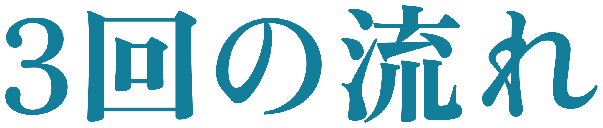
3回のゼミと、一人で進める個人ワーク、期間中の1on1を実施し進めます。
| 回 | 日程 | ゼミ（Zoom） | ワーク（次の回までに） | 1on1 |
|---|---|---|---|---|
| 事前 | 〜12/11 | ― | 2026年の出来事を書き出す | ― |
| 第1回 | 12/12（土） 13:00〜15:00 | 1年を丁寧に振り返る | 第1回の講義で話さなかった 場面／シチュエーションを選び、 そのとき大切にしていたことを 書きとめる | ゼミの仲間と 好きなだけ |
| 第2回 | 12/29（火） 20:00〜22:15 | 大切にしたい価値観を 仮決めする | 年末年始のあいだに、 仮決めした価値観を思い出した 場面をメモする | |
| 第3回 | 1/10（日） 13:00〜15:00 | 2027年大切にしたい 価値観を決める | ― | ― |
第1回12/12（土）13:00〜15:001年を丁寧に振り返る
第1回の前に書き出した2026年の出来事の中から、心が動いたものと迷って決めたものを選び、3〜4人のグループで1つずつ対話します。聞いた仲間は、対話の中で心に残ったことばを返します。返ってきたことばを読み返しながら、場面ごとに「このとき大切にしていたこと」を書きとめて終わります。
第2回12/29（火）20:00〜22:15大切にしたい価値観を仮決めする
第1回から書きためた「このとき大切にしていたこと」を並べて読み、何度も出てくることばや、似た意味のことばを探します。候補のことばをもとにグループで対話し、仲間から返ってきたことばも手がかりにして、「わたしは2027年、〇〇を大切にします。」の文にします。
第3回1/10（日）13:00〜15:002027年大切にしたい価値観を決める
年末年始に、仮決めしたことばを思い出した場面について、グループで対話します。そのあと一人の時間を取り、仮決めの文を残すか、変えるか、外すかを自分で決めます。決めた価値観は、どの場面から出てきたことばかを添えて、別のグループの仲間に聞いてもらいます。最後にワークブックの見開きに書き、決めた日と名前を入れて3回を終えます。
ワークブックには、1年を思い出すための問いが30あります。第1回の前に、気になる問いから答えて、今年の出来事を書き出します。そのうちの5つです。
ワークブックの30の問いから
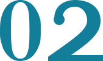
今年、誰かに言われて残っていることばはありますか。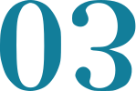
今年、時間を忘れて夢中になったのは、何をしていたときですか。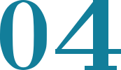
今年、断ったことは何ですか。最後に、2027年に大切にしたい価値観をひとつから3つ、ワークブックの見開きに書きます。決めた日と名前を入れて、3回を終えます。数字の目標や年間の計画は立てません。
A5・44ページの1冊にまとめました。印刷して手で書いても、スプレッドシートに打ち込んでも、同じように進められます。
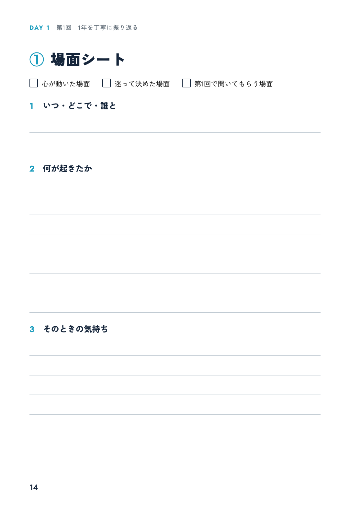
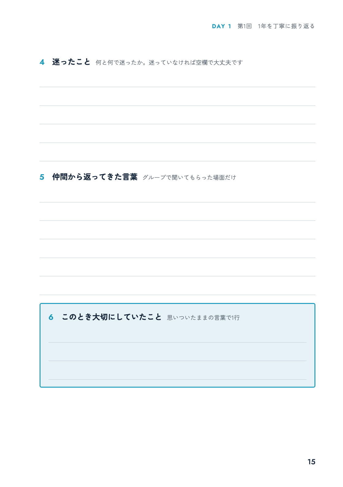
場面シートひとつの場面を見開きで書きます。右のページの最後が「このとき大切にしていたこと」です。
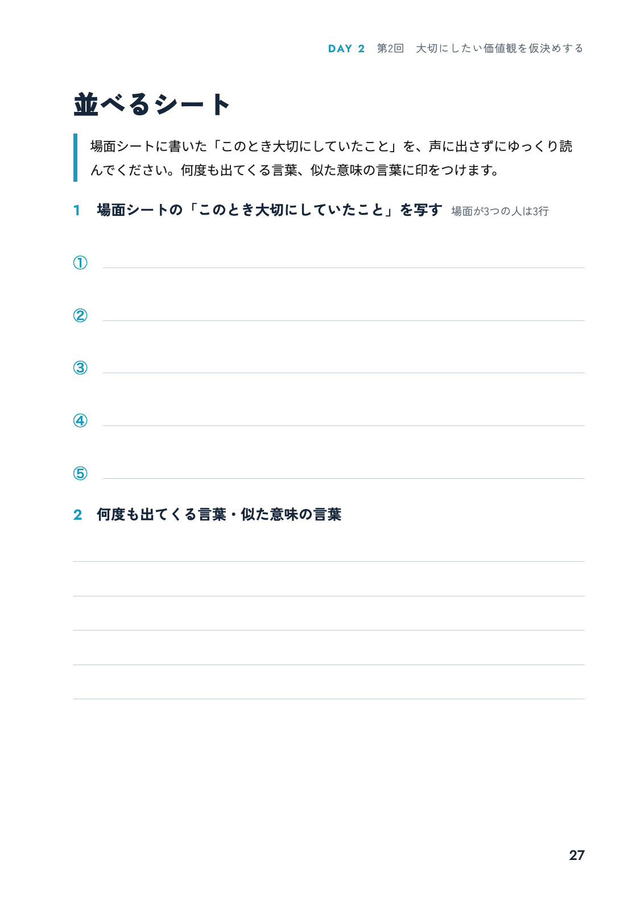
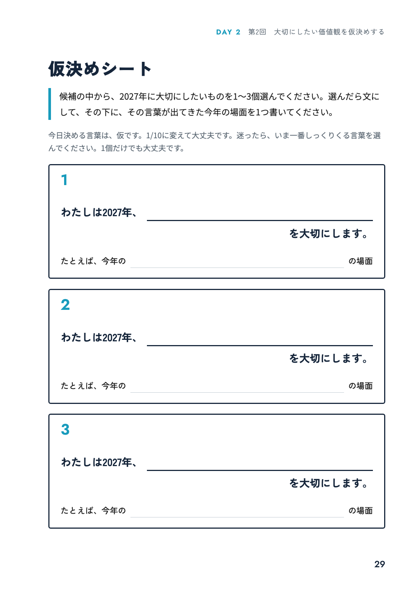
並べるシートと仮決めシート第2回で使います。書いてきた行を並べて読み、文にして仮に決めます。
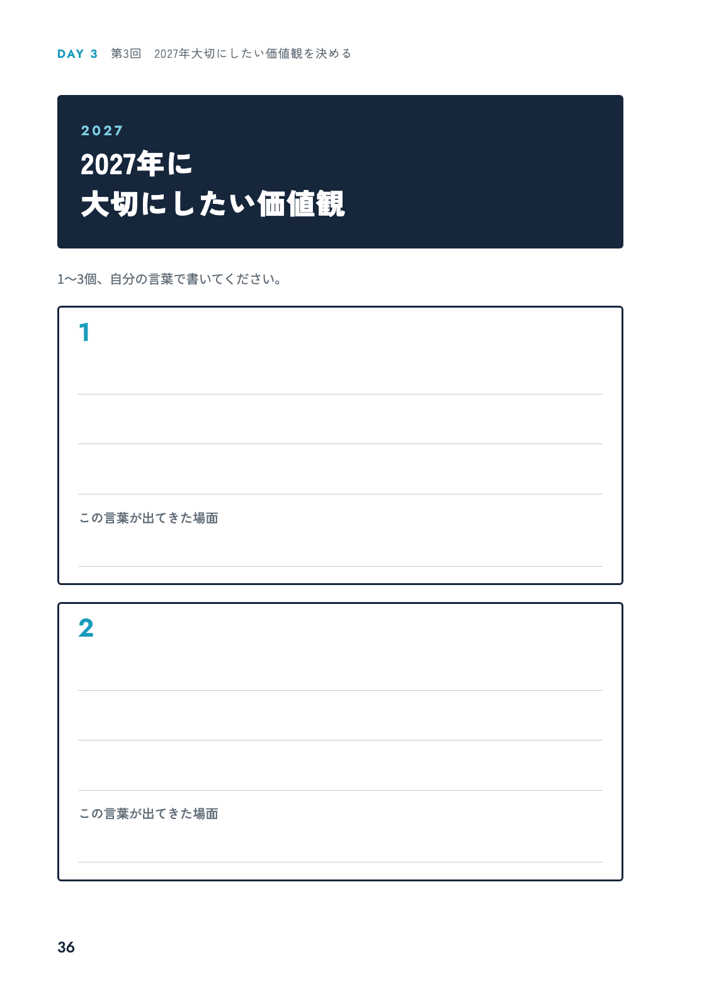
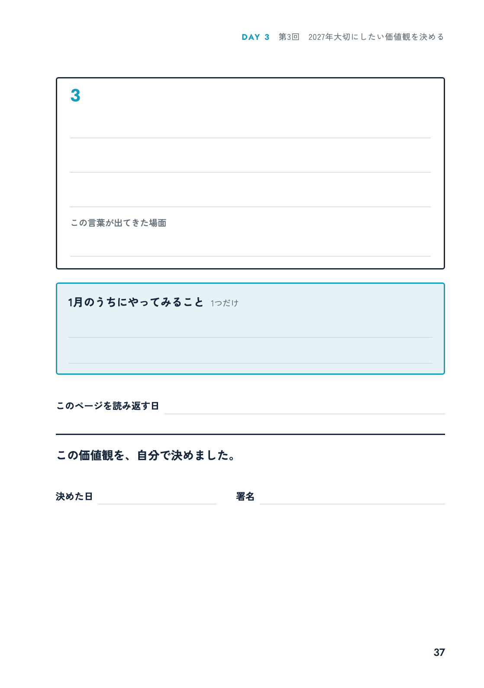
2027年に大切にしたい価値観第3回で書く見開きです。最後に、決めた日と名前を入れます。
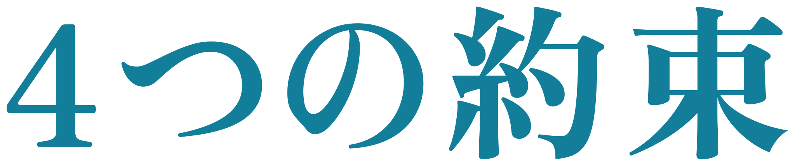
12/12（土）・12/29（火）・1/10（日）
Zoom開催・全3回・9,900円（税込）
回と回のあいだに書く時間は、全部で2時間くらいです。書けなかったところがあっても、そのまま参加できます。
POOLO公式LINEのフォームからお申し込みください。締切は12月6日（日）23:59です。
Zoom開催・全3回・9,900円（税込）
LINEで申し込む1. LINEのフォームに回答する
2. LINEに届く案内から、参加費を支払う（カード決済）
3. 12/7（月）ごろ、申し込んだ人だけのLINEグループの案内が届く